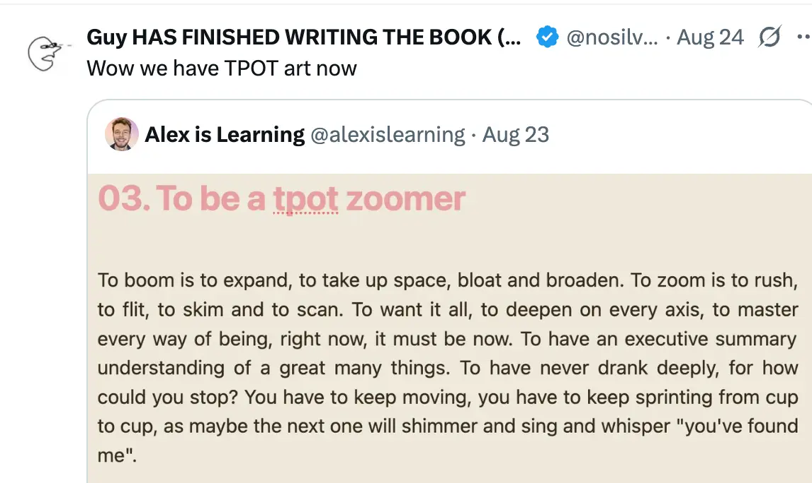
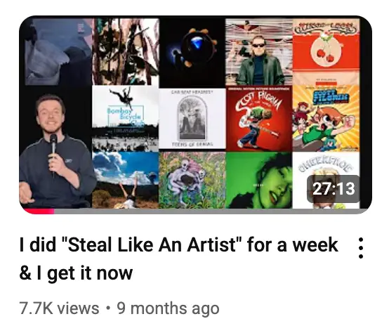
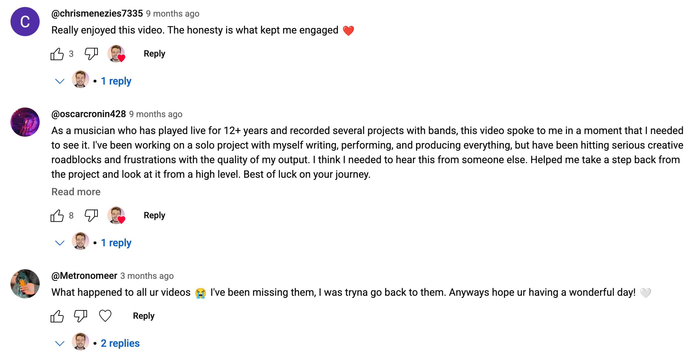

- Mon 2025-08-25
My ahem “creative journey”
Early today I was walking down the hospital corridor and was suddenly struck by the thought of “oh wow, yeah, there was a time when I was scared to tweet because… I guess I thought my thoughts didn’t matter enough, or something”
Now tweeting feels so obviously fun and worthwhile
And I’ve had similar arcs, it’s multiple “0-to-1” events. And after a while you forget that you once lived in the 0, in having never done x thing:
- “I haven’t tweeted into the void before” → got up to 700 followers (before getting frickin suspended)
- “I have never written a blog post” → “I have now written and published 10+ blog posts”
- “Paper journaling is better, actually*” → 7th September, 2023
- “I have never made a youtube video” → “I have now made youtube videos”
- “Vlog from France” (17th Feb 2024)
- “Morning 1 in Toronto” (23th May 2024)
- “idk wtf i’m doing with my life hehehe hahaha” (26th Oct 2024)
- “I have never made music before” → “I have now made ~50 ‘songs’”
- “I haven’t really written anything like idk prose-y as an adult” → 01. To be a boomer, 02. Don’t be overwhelmed!, 03. To be a tpot zoomer etc
So let’s call that phase 1
- So this is really cool, I feel like I’ve gotten to a place of unblocking various fears around putting stuff out there
- And I think I’ve also had some updates re: how to make “art”, what it looks like1
Oh, maybe phase 1.5 is like “people say your stuff is good”
- E.g. Rival Voices or whatever the hell he’s called now (Guy) called my post tpot art

- Various nice youtube comments
- Youtube comments
- E.g. check it out, this video got 7.7k views and 84 comments!
- I did “Steal Like an Artist” for a week & I get it now


So, what’s phase 2?
- The obvious thing is that phase 2 is about consistency
- Phase 0 is like “get over the fears”
- Phase 1 is “do some explorations, 5+ substacks, 5+ youtube vids, 5+ songs, 1000+ tweets, really get it in your head that this is a thing you can do”
- And phase 2 is like “find some combination that you actually genuinely want to do for the foreseeable future”2 3
- So, I’m currently thinking about returning to Youtube, and having it be a hub for everything
- My big youtube era was all about “I am learning to create things, and by things I mean songs and vlogs”. There was no mention of the rest of my life, of tpot and my friends and David Foster Wallace and my other myriad obsessions. I think making a return and having it be an outlet for creativity and whatever I’m excited about feels very exciting
Phase 2 of youtube
Music → that has been sweated over a bit
- Phase 1 was “make a song a day, quantity over quality, break through the aversion of the initial learning curve”
- I’d love a phase 2 of like “one actually quite good song a week/fortnight”
- I have some theories re: what to do, e.g.:
- Accept that I don’t have the time or really the energy/desire to get good at Ableton. Forget about music production, synths, plugins, effects, and just focus on making demos with my guitar. Find the skeleton of a great song first, stay away from the laptop for as long as possible
Writing → volume
- Just write daily, vignettes and stuff
- Weekly substack post?
Videos → weekly higher quality video
- Folding in all my stuff
- With this website as a nice appendix
- Rather than “the videos are self-contained and miss lots”
Point of view → phase 2
- It’s ok to write more lyrical/flower-y stuff, it doesn’t have to be this self-referential self-aware self-deprecating stuff all the time
- It’s ok to write from the POV of parts. It’s ok to say things that I don’t fully endorse
Footnotes
-
- E.g. even recently I realised that it’s “ok” to write from the point of view of parts of yourself. I felt a tension during my “making songs and youtube videos” era where I’d feel self conscious re: missing out nuance, and I’d constantly want to water down my stuff and add like, meta-commentary, etc
- Vs something like 01. To be a boomer which is like, not a mode that I want to live from, but cathartic
- There’s something here about the quantity of information that you can fit into song lyrics is very low (vs say an essay), and of course you’ll have to inhabit some reductive takes, that’s just a table-stakes thing that everyone is
- E.g. even recently I realised that it’s “ok” to write from the point of view of parts of yourself. I felt a tension during my “making songs and youtube videos” era where I’d feel self conscious re: missing out nuance, and I’d constantly want to water down my stuff and add like, meta-commentary, etc
-
E.g., I currently really don’t know if music is for me. I think I have a natural talent for writing, especially the angsty anxious headlong David Foster Wallace thing of e.g. 02. Don’t be overwhelmed!. Vs writing songs never felt that easy. I don’t know if writing short lines works for me, rhymes and melodies and stuff… ↩
-
I really really enjoy writing my vignettes when it’s going well, and have had real soul-enlivening moments of reading my stuff out loud and exclaiming “that’s pretty fucking good” with a big grin on my face. And to be fair, I’ve had similar experiences with youtube videos, rewatching my youtube videos multiple times and being really pleased to have made them. And I’ve enjoying reading and writing my substacks, and tbf there are even some songs that I’ve liked. So maybe it’s a multi-media youtube channel that combines everything… I think that makes more sense than like “I am a vignette writer, that is what I do!“. Similar to my professional life where I’d much rather be a competent generalist than specialise in one thing… ↩